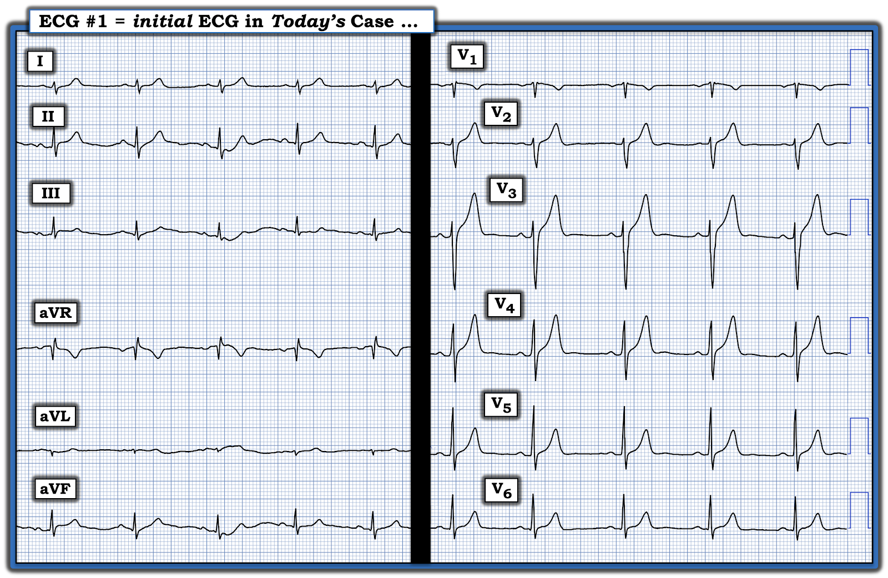
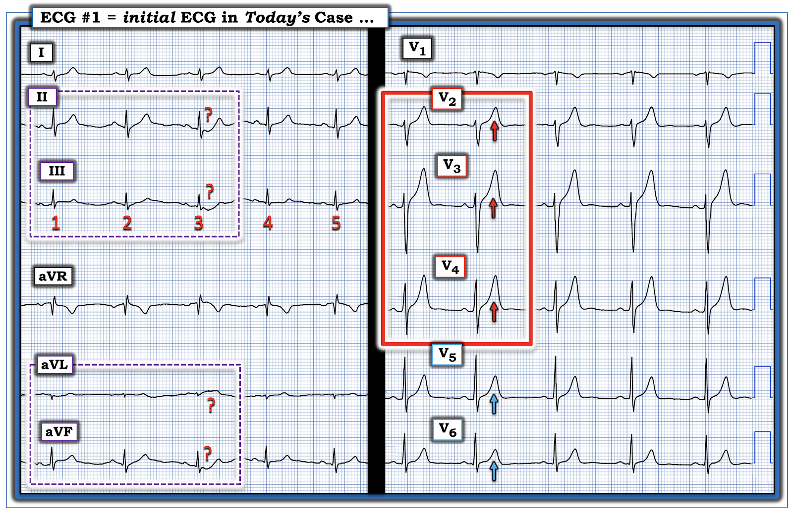

ECG Blog #499 — Một vận động viên bị đau ngực ...
Tôi được cho xem điện tâm đồ ở Hình 1, ghi từ một người đàn ông trung niên trước đó khỏe mạnh — đến khoa cấp cứu (ED — Emergency Department) vì đau ngực (CP — Chest Pain) mới xuất hiện, dữ dội.
- Đáng chú ý — bệnh nhân là một vận động viên sức bền đang tập luyện tích cực.
CÂU HỎI:
- Bạn sẽ diễn giải điện tâm đồ ở Hình 1 như thế nào?
- Bạn có nên kích hoạt phòng thông tim (cath lab) không?


SUY NGHĨ CỦA TÔI về CA BỆNH hôm nay:
Bệnh sử trong ca hôm nay là đáng lo ngại. Trong bối cảnh này — tôi sẽ diễn giải điện tâm đồ ở Hình 1 là gợi ý tắc cấp đoạn gần LAD cho đến khi chứng minh được điều ngược lại.
- Nhịp trên điện tâm đồ #1 là nhịp xoang, tần số ~65/phút. Tất cả các khoảng (PR-QRS-QTc) và trục đều bình thường. Không lớn buồng tim.
Về
Thay đổi sóng Q-R-S-T:
- Có vẻ có các sóng Q rất nhỏ (có lẽ không có ý nghĩa) ở chuyển đạo III và aVF.
- Sự tăng tiến sóng R bình thường (với vùng chuyển tiếp, nơi sóng R trở nên cao hơn độ sâu của sóng S — xuất hiện bình thường giữa chuyển đạo V3-đến-V4).
- Thay đổi đoạn ST-sóng T — Dấu hiệu nổi bật nhất trên bản ghi này là kích thước tăng không tương xứng của sóng T ở các chuyển đạo trước tim (Xem các mũi tên ĐỎ trong Hình 2). Đặc biệt khi phức bộ QRS ở chuyển đạo V2,V3,V4 có biên độ khiêm tốn — sóng T ở các chuyển đạo này rõ ràng trông lớn hơn mức dự kiến — điều mà trong bối cảnh một bệnh nhân đau ngực mới xuất hiện — đủ để xếp các sóng T này là tối cấp cho đến khi chứng minh được điều ngược lại!
- Nếu đứng riêng lẻ, có lẽ tôi đã không diễn giải sóng T ở chuyển đạo V5,V6 là bất thường. Tuy nhiên, trong bối cảnh đau ngực mới xuất hiện và các sóng T trông như tối cấp ở các chuyển đạo lân cận V2,V3,V4 — tôi cho rằng sóng T ở chuyển đạo V5,V6 thể hiện sự lan rộng của cùng quá trình này (các mũi tên XANH trong Hình 2).
ĐIỂM THEN CHỐT (PEARL) #1: Khi tôi có bất kỳ nghi ngờ nào từ các chuyển đạo trước tim về ý nghĩa lâm sàng của các dấu hiệu ST-T ở một bệnh nhân có triệu chứng — tôi xem thật kỹ hình dạng ST-T ở các chuyển đạo chi.
- Xin nhấn mạnh: Không phải mọi ca tắc cấp LAD đều biểu hiện dấu hiệu bất thường ở chuyển đạo chi. Thường gặp nhất — chính các ca tắc đoạn gần LAD là những ca dễ biểu hiện ít nhất một mức ST chênh lên nào đó ở chuyển đạo aVL và/hoặc ST chênh xuống soi gương ở các chuyển đạo dưới.
- Do đó: Nếu bạn không thấy bất thường ST-T ở các chuyển đạo chi — điều này không loại trừ khả năng tắc cấp LAD. NHƯNG — NẾU bạn có thấy bất thường ST-T rõ ràng ở các chuyển đạo chi — điều này ủng hộ mạnh mẽ rằng điều bạn còn băn khoăn ở các chuyển đạo trước tim đúng là một chỉ điểm đáng tin cậy của một quá trình cấp tính đang diễn ra.
CÂU HỎI:
Hãy XEM lại điện tâm đồ ở Hình 2:
- Bạn đánh giá các dấu hiệu ST-T ở các chuyển đạo chi như thế nào?


============================
ĐIỂM THEN CHỐT (PEARL) #2: Điều quan trọng là nhận ra sự khó khăn khi đánh giá độ tin cậy của những gì bạn đang thấy khi hình dạng ST-T có nhiều biến thiên như ta thấy ở các nhát #1,2,3 trong chuyển đạo II,III; và trong chuyển đạo aVL,aVF (trong các hình chữ nhật nét đứt màu TÍM ở Hình 2).
- Nhát nào trong 3 nhát đầu tiên này ở các chuyển đạo chi phản ánh hình dạng "thật" của ST-T ở các chuyển đạo này? Nếu đó là nhát #3 (cho thấy ST chênh xuống rõ ở các chuyển đạo dưới kèm ST chênh lên kín đáo ở aVL) — thì không còn nghi ngờ gì về tính tối cấp của các sóng T ở chuyển đạo trước tim!
- NHƯNG — Đánh giá của chúng ta có thể kém chắc chắn hơn nếu nhát #1 và #2 phản ánh hình dạng ST-T thật ở chuyển đạo II,III; và aVL,aVF.
May mắn là
— Sóng ST-T của 2 nhát cuối ở các chuyển đạo chi trong Hình 2 trông nhất quán hơn về hình dạng — vì vậy tôi đánh giá chủ yếu dựa trên những gì tôi thấy ở nhát #4 và #5 trong Hình 2:
- Đoạn ST ở chuyển đạo III và aVF của nhát #4 và 5 trông thẳng đuỗn.
- Với QRS rất nhỏ ở chuyển đạo aVL — sóng T dương của nhát #4 và 5 ở chuyển đạo này trông lớn không tương xứng.
- Và — cả 5 nhát ở chuyển đạo I trông nhất quán về hình dạng — đều cho thấy đoạn ST hơi thẳng đuỗn kèm sóng T "đầy đặn" hơn mức dự kiến.
- Nhận định: Ở bệnh nhân đau ngực dữ dội mới xuất hiện này — tôi diễn giải điện tâm đồ này là gợi ý tắc cấp đoạn gần LAD cho đến khi chứng minh được điều ngược lại. Suy nghĩ của tôi khi được cho xem bản ghi này là kích hoạt phòng thông tim.
- Nếu các nhân viên y tế tại chỗ còn bất kỳ nghi ngờ nào về việc cần kích hoạt phòng thông tim — nhanh chóng tìm một điện tâm đồ cũ của bệnh nhân này hoặc ghi lại điện tâm đồ lần nữa trong vòng 10-15 phút có thể là những lựa chọn hữu ích.
============================
Ca bệnh tiếp diễn:
- Kết quả Troponin ban đầu bình thường.
- Bệnh nhân được dùng paracetamol tĩnh mạch — giúp giảm đau đáng kể.
- Cảm thấy khá hơn, bệnh nhân tin chắc cơn đau ngực của mình là do buổi tập sức bền cường độ cao hôm trước. Kết quả là — anh ấy rời khoa cấp cứu sau 30 phút, trái với lời khuyên của bác sĩ (vì thế không ghi lại điện tâm đồ hay xét nghiệm lại Troponin).
SUY NGHĨ CỦA TÔI:
Khi được kể lại những điều trên — tôi đã trả lời như sau:
- Tôi sẽ kích hoạt phòng thông tim dựa trên điện tâm đồ ban đầu mà ta thấy ở Hình 1.
- Sẽ rất hữu ích nếu được xem một điện tâm đồ theo dõi ghi trong vòng 15-30 phút sau bản ghi thứ 1. NẾU điện tâm đồ ở Hình 1 thực sự phản ánh một nhồi máu cơ tim cấp đang tiến triển — rất có thể điện tâm đồ thứ 2 ghi trong 30 phút tiếp theo đã cho thấy thay đổi ST-T "động" (dynamic) (tức là các sóng T tối cấp ở chuyển đạo trước tim "xẹp" xuống) — và điều đó sẽ có giá trị chẩn đoán một biến cố cấp đang diễn ra!
- ĐIỂM THEN CHỐT (PEARL) #3: Troponin ban đầu bình thường không loại trừ nhồi máu cơ tim cấp (vì có tới 25% ca nhồi máu STEMI+ không đạt ngưỡng "chẩn đoán xác định" (rule-in) ở lần xét nghiệm Troponin đầu tiên — Wereski và cs. — JAMA Cardiology, 2020). Vì vậy, dù Troponin ban đầu tăng sẽ giúp xác nhận một biến cố cấp đang diễn ra — thì Troponin ban đầu bình thường cũng sẽ không làm thay đổi nhận định của tôi rằng cần kích hoạt phòng thông tim.
- ĐIỂM THEN CHỐT (PEARL) #4: Ở bệnh nhân đau ngực mới xuất hiện mà bạn nghi ngờ một biến cố tim cấp — tốt nhất không nên dùng thuốc giảm đau (tức là Morphine tĩnh mạch) — cho đến khi đã quyết định hoặc kích hoạt phòng thông tim hoặc đã loại trừ chắc chắn OMI cấp. Đó là vì việc giảm đau ngực một phần (hoặc hoàn toàn) bằng Morphine tĩnh mạch có thể tạo cảm giác an toàn giả tạo — trong khi thực tế điều nó gây ra là làm chậm trễ chẩn đoán tắc mạch vành cấp vốn cần điều trị triệt để = thông tim sớm kèm PCI ( = CA BỆNH này, và nhiều ca khác trên Dr. Smith's ECG Blog).
- Tôi đã hỏi liệu có thể theo dõi diễn tiến của bệnh nhân này không?
Diễn tiến cuối cùng:
Các nhân viên y tế đã chủ động liên hệ và gọi điện được cho bệnh nhân vài ngày sau đó.
- Thực tế bệnh nhân vẫn ổn kể từ khi rời bệnh viện trái với lời khuyên của bác sĩ. Anh ấy tin chắc rằng cơn đau ngực là do chấn thương cơ trong quá trình tập luyện thể thao cường độ cao.
- Vài tuần sau — bệnh nhân đã đến tái khám. Anh ấy cho biết vẫn có thể tiếp tục tập luyện sức bền — dù thỉnh thoảng có cảm giác khó chịu mà anh cho là liên quan đến một số cử động của thân mình.
- Không có điện tâm đồ cũ nào trong hồ sơ của bệnh nhân để so sánh làm "điện tâm đồ nền" trước đây.
- Điện tâm đồ ghi lại ở lần tái khám này về cơ bản giống hệt điện tâm đồ ở Hình 1!
- Siêu âm tim tại phòng khám lúc này hoàn toàn bình thường (kích thước các buồng tim và chức năng tim bình thường).
- Chụp CT động mạch vành đã được thực hiện — và không có bệnh lý đáng kể. Chức năng thất trái bình thường.
KẾT LUẬN CA BỆNH:
Dựa trên diễn tiến nêu trên của ca này — chúng tôi kết luận rằng hình ảnh điện tâm đồ ở Hình 1 là một biến thể tái cực bất thường ở vận động viên sức bền được tập luyện cường độ cao này, vốn hoàn toàn khỏe mạnh và có thể trạng tuyệt vời.
- ĐIỂM THEN CHỐT (PEARL) #5: Tôi thích đưa cho bệnh nhân một bản sao của những điện tâm đồ bất thường, như bản ghi ban đầu hôm nay, để họ giữ trong ví hoặc quét lưu vào điện thoại — để nếu sau này có lúc phải đi cấp cứu lần nữa — họ có thể đưa ra bản sao bản ghi nền "bình thường đối với họ". Việc này đã được làm cho bệnh nhân hôm nay — người tiếp tục tập luyện thể thao đều đặn.
- ĐIỂM THEN CHỐT (PEARL) #6: Đôi khi các thăm dò (kể cả thông tim) sẽ bình thường. Điều quan trọng là hiểu rằng kết quả thông tim bình thường không có nghĩa là lẽ ra không nên thông tim. Ngược lại — đôi khi cách duy nhất để chắc chắn không có bệnh mạch vành là đánh giá đầy đủ, mà đôi khi bao gồm cả thông tim.
==================================
Lời cảm ơn: Xin cảm ơn Lorenzo Kapetis (Lamaca, Síp) đã chia sẻ ca bệnh và bản ghi này.
==================================

==================================
PHẦN BỔ SUNG #1 (ngày 5 tháng 10 năm 2025):
- Để có Thêm Tài liệu — về việc đọc điện tâm đồ trong OMI (các trường hợp không thỏa tiêu chuẩn STEMI dựa trên milimét).

- Trong "My ECG Podcasts" — Hãy xem ECG Podcast #2 (Những lỗi đọc điện tâm đồ dẫn đến bỏ sót tắc mạch vành cấp). LƯU Ý: Mục lục có mốc thời gian của Podcast #2 này giúp nhanh chóng tìm tới bất kỳ khái niệm then chốt nào bạn muốn ôn lại.
- Hãy xem gần đầu trang "My ECG Videos" , các video trong loạt MedAll ECG Talks của tôi điểm lại chẩn đoán nhồi máu cơ tim cấp trên điện tâm đồ — và cách nhận ra OMI cấp khi không đạt tiêu chuẩn STEMI (được điểm lại trong ECG Blog #406 — Blog #407 — Blog #408).
- Xin LƯU Ý — Với mỗi video trong 6 video MedAll ở đầu trang My ECG Videos, NẾU bạn bấm vào "More" trong phần mô tả, bạn sẽ thấy một Mục lục có liên kết cho phép nhảy thẳng tới phần thảo luận các điểm cụ thể (tức là tại 5:29 trong video dài 22 phút của Blog #406 — bạn có thể nhảy tới mục "You CAN recognize OMI without STEMI findings!" (Bạn CÓ THỂ nhận ra OMI dù không có dấu hiệu STEMI!) ).
T.B. (P.S.): Về một ca bệnh đáng suy ngẫm, gợi nhiều trăn trở được bác sĩ tim mạch Willy Frick thảo luận — kèm phần bình luận của tôi ở cuối trang (trong bài ngày 17 tháng Ba năm 2025) — Hãy xem ca bệnh này.
- Như BS Frick và tôi đã nhấn mạnh — không chỉ "mô hình STEMI" hiện hành đã lỗi thời — mà trong những ca như ca chúng tôi mô tả, vì nhân viên y tế chờ đến khi tiêu chuẩn STEMI cuối cùng được thỏa mãn — thông tim và PCI đã bị chậm trễ hơn 1 ngày.
- NHƯNG — vì phòng thông tim được kích hoạt trong vòng 1 giờ kể từ điện tâm đồ cuối cùng đã thỏa tiêu chuẩn STEMI — ca này sẽ được ghi vào các sổ đăng ký nghiên cứu là "rất thành công với việc kích hoạt nhanh phòng thông tim trong vòng 1 giờ kể từ khi xác định "STEMI". Cách diễn giải sai lầm này về diễn biến sự việc hoàn toàn bỏ qua thực tế lâm sàng rằng bệnh nhân này đã mất đi một cách không cần thiết một lượng cơ tim đáng kể, vì điện tâm đồ ban đầu (ghi trước đó >24 giờ) rõ ràng đã có giá trị chẩn đoán STEMI(-)/OMI(+) nhưng không được xử trí vì nhân viên y tế bị "mắc kẹt" vào phác đồ STEMI.
- Hậu quả đáng tiếc là tạo ra y văn "ủng hộ" sai lầm, gợi ý tính đúng đắn của một mô hình đã lỗi thời và không còn chính xác.
- THỰC TẾ lâm sàng MẤU CHỐT: Nhiều ca tắc mạch vành cấp mà chúng ta gặp không bao giờ xuất hiện ST chênh lên (hoặc chỉ xuất hiện ST chênh lên muộn trong diễn tiến) — trong khi chú ý đến các tiêu chuẩn điện tâm đồ bổ sung trong các tài liệu tham khảo nêu trên có thể giúp ta nhận ra OMI cấp ở nhiều ca STEMI(-) như vậy.